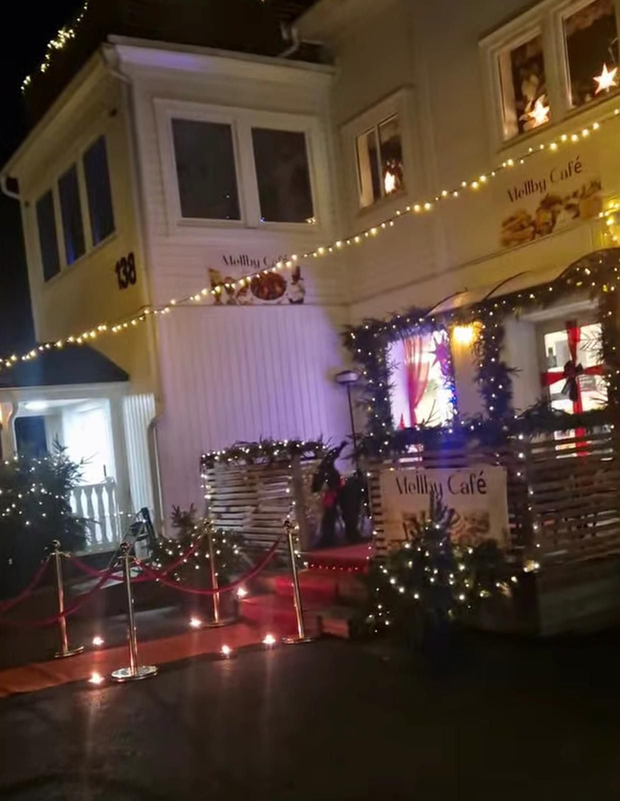
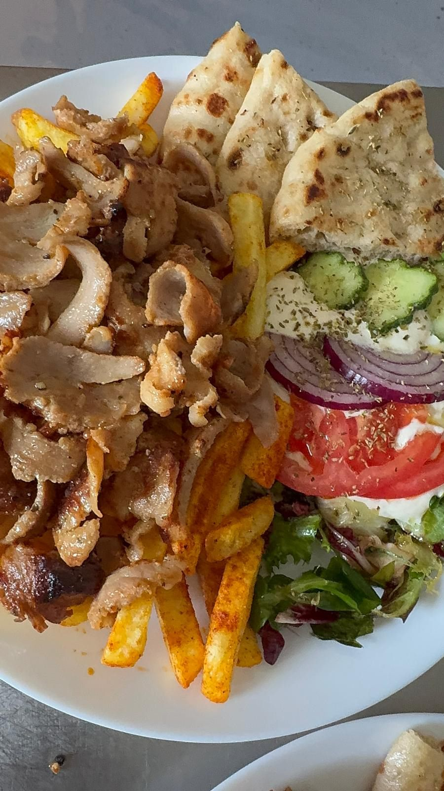
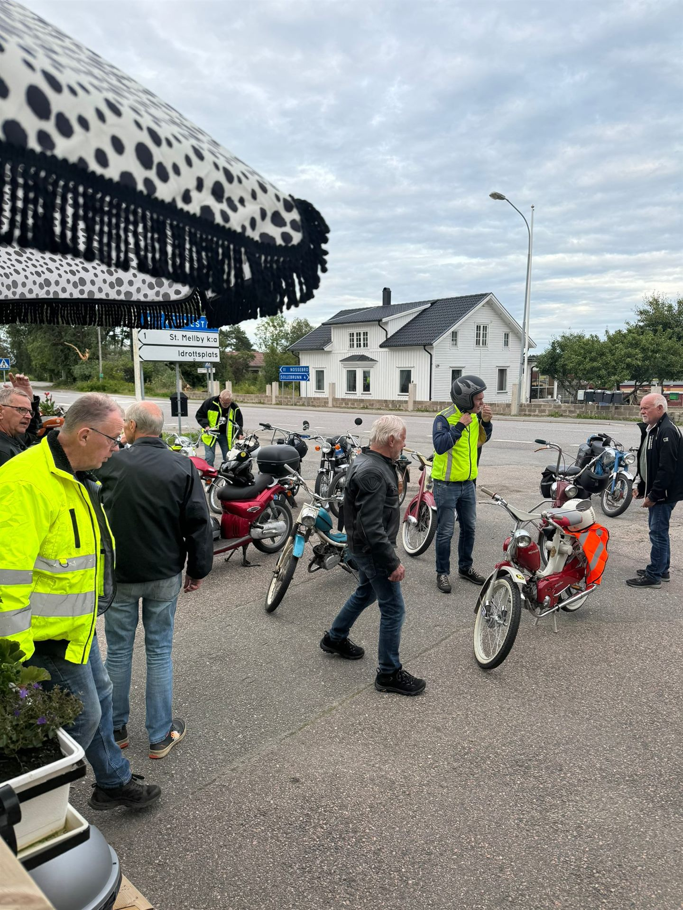
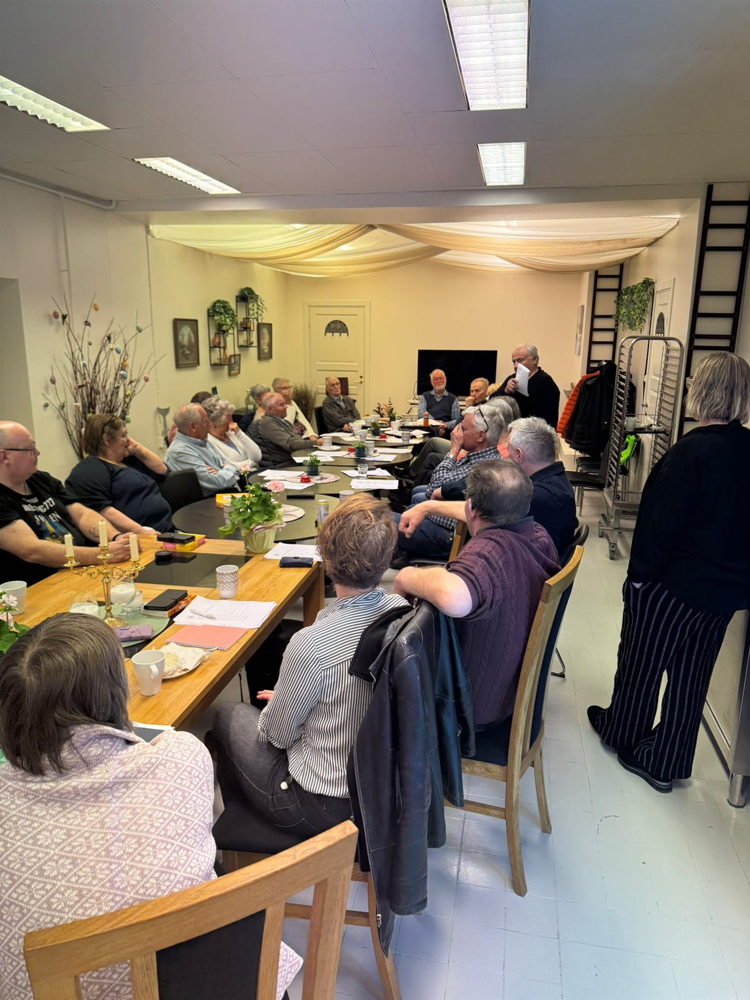
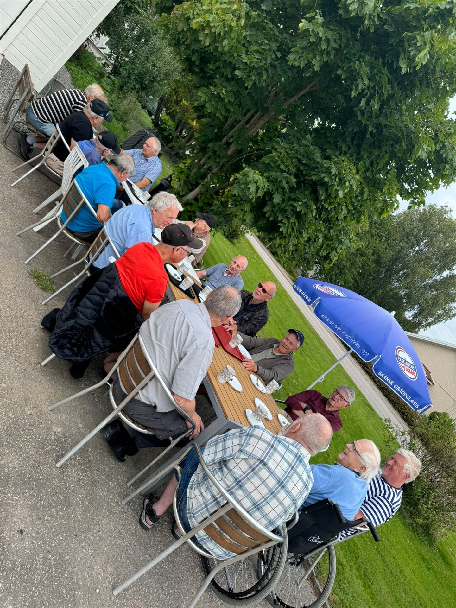

Historien om en liten by, ett gammalt hus och ett café som blev bygdens vardagsrum.

Mellby Café öppnade i juni 2024 i Stora Mellby, och redan från start blev det tydligt att det här skulle bli mer än ett vanligt café. Vi har uppmärksammats i lokaltidningar och blivit en naturlig samlingsplats för hela bygden.
Hos oss dricker du inte bara en kopp kaffe — du kan fika efter ett föreningsmöte, ta en paus under en mopedträff på gården, eller bara sätta dig ner med en tidning i lugn och ro.
Förutom hembakat och nybryggt kaffe serverar vi grekisk husmanskost, klassiska smörgåsar och husets hamburgare. Allt lagas med omtanke, och menyn uppdateras efter säsong.
Se vår meny
Föreningsmöten, mopedträffar och stora som små fikastunder — hos oss finns plats för alla.

Ett populärt stopp för mopedklubbar på turné genom bygden.

Vi öppnar gärna upp lokalen för möten och gemensamma träffar.

Sommartid dukar vi upp på uteplatsen för fika i solen.

Firar du något, eller ska ni bara samlas lite extra? Vi tar emot beställningar på tårtor, cheesecake, bakelser, hela smörgåstårtor och charkbrickor — allt uppdukat och klart att hämta.